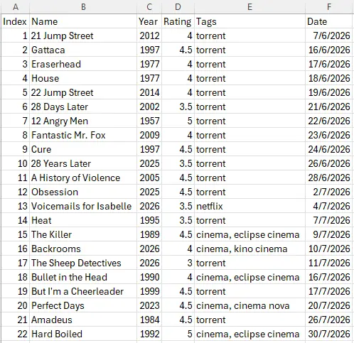
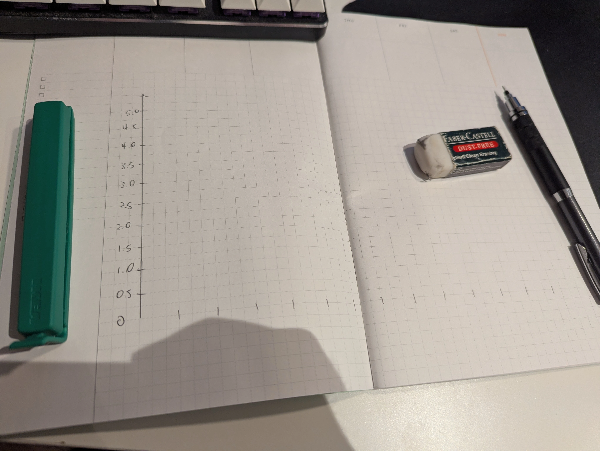
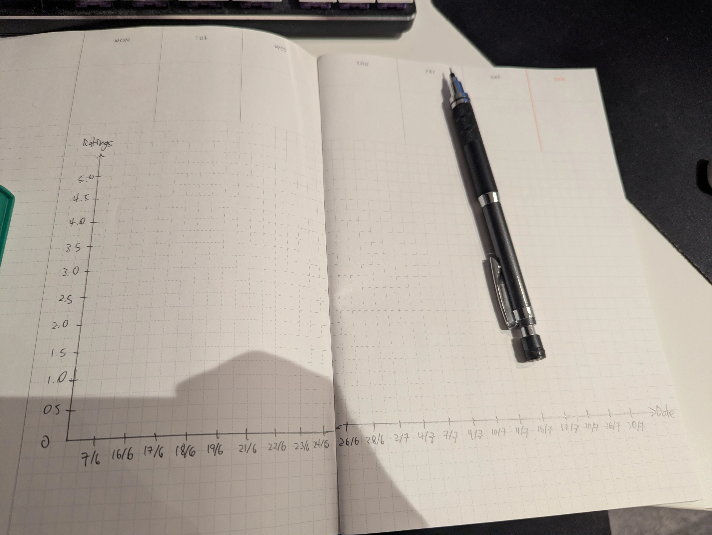
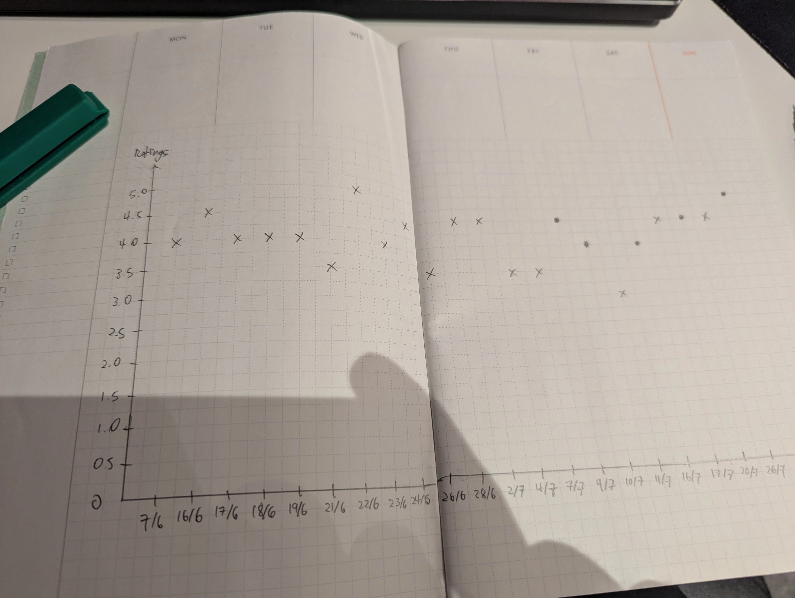
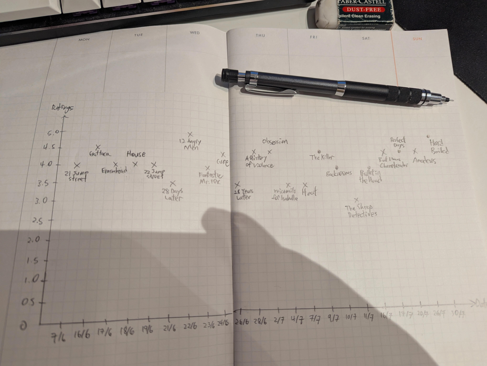
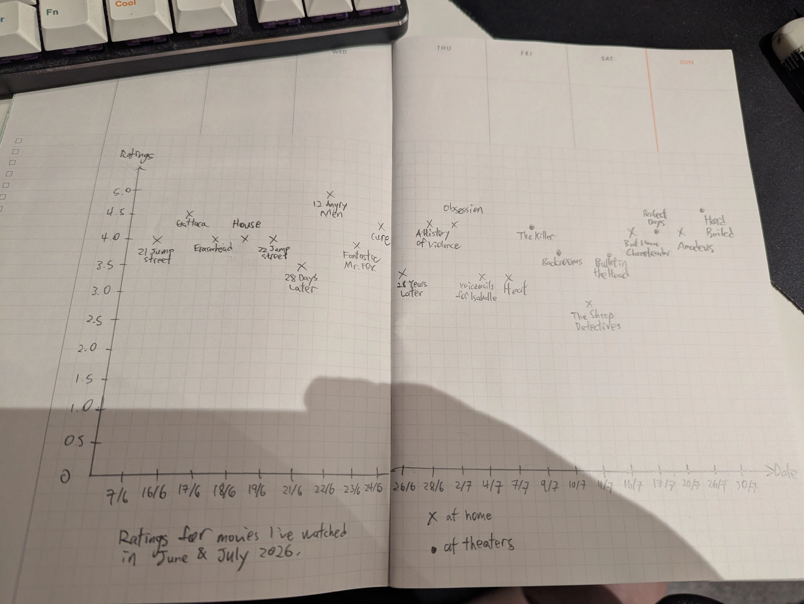
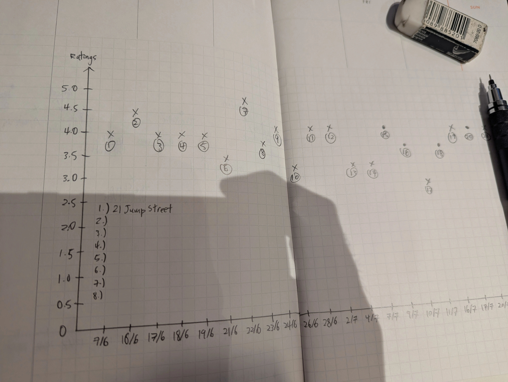

Rankings for movies I've watched in June & July 2026 5/8/2026
Towards the end of 2025 I was influenced by a Youtuber I watched to make a Letterboxd account, a website to track and rate movies. It was not used much until my semester break in June when I had a lot of time on my hands. Letterboxd allows me to export my data anytime in CSV format.

The Creation

trying out the spacing for the x and y axis

writing out the labels for the x and y axis

plotting

labelling the plots

graph with the title and legends

I was not satisfied with the previous graph because